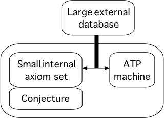

Context and Use

Used in conjunction with internal axioms and conjecture
External data held externally (doh)
Comparatively slow access (selection and transfer)
Data retrieval can be incomplete (or even unsound!)